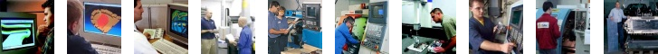

|
|
|
CAD/CAM, CNC, kalýp, makine ve imalat için, sektöre özel kariyer sitesi |
|  |
|
|
| Ýþ Ýlanlarý > 2013 arþivi: |
| 19-12-2013 |
Kalýpsan |
Kalýp Tasarýmcýsý (CATIA ), Plastik Enjeksiyon Üretim Sorumlusu, Plastik Enjeksiyon Üretim Planlama Sorumlusu, Ýstanbul |
| 18-12-2013 |
Eksen Müh. |
CAE Satýþ Mühendisi, Ýstanbul |
| 11-12-2013 |
Orsa Proje |
CAD Operatörü (UGS NX ), 3D Tarama Cihaz Operatörü, Ýstanbul |
| 26-11-2013 |
Üçgen Yazýlým |
NX/CAM / VERICUT Eðitim Destek ve Uygulama Sorumlusu, Siemens NX CAD/CAM Eðitim ve Teknik Destek Uzmaný, Ýstanbul |
| 15-11-2013 |
SEM-MAK |
CAD/CAM Operatörü (UGS NX), Tel Erozyon Operatörü (Charmilles, GOelan), Ýstanbul |
| 08-11-2013 |
Nikken A.Þ. |
Satýþ Mühendisi, Servis Mühendisi, Ýstanbul |
| 30-10-2013 |
Makkalýp |
Tel Erozyon Operatörü (ESPRIT), Ýstanbul |
| 08-10-2013 |
ArkA Tasarým |
CNC Dik Ýþlem Tezgah Operatörü (Auton CAM Processor, SolidWorks, Rhino), Ýstanbul |
| 07-10-2013 |
Kale Havacýlýk |
NC Programlama Mühendisi (CATIA, VERICUT, Heidenhain), Ýstanbul |
| 07-10-2013 |
Polikim |
Mekanik Atölye Yöneticisi, Kocaeli |
| 13-09-2013 |
Protosis |
Ürün Satýþ ve Destek Mühendisi, Ýstanbul |
| 10-09-2013 |
Üçüncü Binyýl |
CAD/CAM Yazýlým Eðitmeni ve Proje Destek Sorumlusu (CATIA/SolidWorks, PowerMILL/Mastercam/SolidCAM), Ýstanbul |
| 30-08-2013 |
Þato Plastik |
CAD/CAM Sorumlusu (Unigraphics), CNC Operatörü (Heidenhain), Kalýphane Kalfasý, Ýstanbul |
| 28-08-2013 |
Delcam Türkiye |
Satýþ Temsilcisi, Teknik Destek Sorumlusu (Delcam Yazýlým Ürünleri), Ýstanbul |
| 21-08-2013 |
Ýnores |
Proje ve Destek Mühendisleri (NX, Nastran), Satýþ Destek Uzmaný (NX), Ýstanbul |
| 26-07-2013 |
Makkalýp |
Plastik Enjeksiyon Kalýp Tasarýmcýsý (Cimatron, Pro/ENGINEER), Sac Metal Kalýp Tasarýmcýsý (Cimatron, SolidWorks); Ýstanbul |
| 23-07-2013 |
MTN Kalýp |
Proses Kontrol ve 3D Ölçüm Sorumlusu, Ýstanbul |
| 05-07-2013 |
Revizyon Makina |
CAM Operatörü (WorkNC, Esprit, Surfcam, SolidWorks), CNC Tezgah Operatörü, Universal Borwerk Freze Torna Operatörü, Ýstanbul |
| 05-07-2013 |
Nikken A.Þ. |
Satýþ Mühendisi, Ýstanbul |
| 03-07-2013 |
Petrotec Enerji |
Makine Mühendisi, Ýstanbul |
| 26-06-2013 |
Kýzýlca Plastik |
CNC Dik Ýþlem Tezgah Operatörü, (Auton CAM Processor, PowerMILL), Antalya |
| 29-05-2013 |
Milimetrik |
CAD/CAE Yazýlým Eðitmenleri (SolidWorks, ANSYS, Fluent), Ýstanbul |
| 02-05-2013 |
Desa CNC |
Kalýp Tasarýmcýsý (SolidWorks), Ýstanbul |
| 25-04-2013 |
Hassan |
Makine Tasarýmcýsý (AutoCAD, Pro/ENGINEER, TopSolid, Unigraphics NX), Kocaeli |
| 12-04-2013 |
Eksen Kalýp |
CNC Dik Ýþlem Tezgah Operatörü, Kalýpçý Yardýmcýsý, Ýstanbul |
| 20-03-2013 |
TEKYAZ |
Teknik Destek Uzmaný (Cimatron), Ýstanbul |
| 27-02-2013 |
4C Medikal |
Dental ve Biyomedikal CAD/CAM Üretim Sorumlusu (AutoCAD, CATIA, SolidWorks), Ýstanbul |
| 15-02-2013 |
Nikken A.Þ. |
Satýþ ve Teknik Servis Depo Personeli, Ýstanbul |
| 13-02-2013 |
BDT Yazýlým |
Satýþ Temsilcisi (Solid Edge), Ýstanbul |
| 11-02-2013 |
Manus Yazýlým |
Teknik Destek Sorumlusu (AutoCAD, Pro/ENGINEER, NX), Ankara |
| 30-01-2013 |
TEKYAZ |
Teknik Destek Uzmaný (SolidWorks), Ýstanbul |
| 24-01-2013 |
Zirve Yazýlým |
SIEMENS NX (Unigraphics) Satýþ, Egitim ve Destek Sorumlusu, Ýstanbul |
| 10-01-2013 |
Er Makina |
Teknik Ressam (SolidWorks, Inventor, CATIA), Ankara |
|
|
CADCAMkariyer > CAD/CAM, CNC, kalýp, makine ve imalat için, sektöre özel kariyer sitesi |
|
|